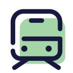

Check your travel route at least a month before the event to avoid delays or cancellations due to changing factors such as weather, transportation schedules, or government policies.
Or find out your travel route from your current location (Yogyakarta or Surakarta, Indonesia) below.
📌 Recommended
🚕 Book an airport taxi (Pataga/Bluebird, JAS, Rajawali) on the counters at airport, to reach the venue directly around 120 minutes
1️⃣🚆 Go by an airport train (KAI Bandara) to Yogyakarta Train Station 55 minutes
2️⃣🚕 Book an online taxi to reach the venue directly around 20 minutes
1️⃣🚆 Go by an airport train (KAI Bandara) to Yogyakarta Train Station 55 minutes
2️⃣🚶 Walk to Portable Jl. Gandekan (Dagen) / Portable Jl. Jlagran Lor Bus Stop 8 minutes
3️⃣🚌 Go by a TransJogja Bus 1B to TJ Colombo (Kosudgama) Bus Stop 18 minutes
🚕 Book an online taxi to going to the venue directly around 120 minutes
🚌 Go by DAMRI to going to the venue directly around 120 minutes
1️⃣🚶Walk to Portable Jl. Gandekan (Dagen) / Portable Jl. Jlagran Lor Bus Stop 8 minutes
2️⃣🚌 Go by a TransJogja Bus 1B to TJ Colombo (Kosudgama) Bus Stop 18 minutes
🚕 Book an online taxi to reach the venue directly around 20 minutes
1️⃣🚶 Walk over to the under Lempuyangan Flyover 3 minutes
2️⃣🚕 Book an online taxi to reach the venue directly 10 minutes
1️⃣🚃 Go by a commuter line (KAI Commuter) to Lempuyangan Train Station around 90 minutes
2️⃣🚶 Walk to below the Lempuyangan Flyover 3 minutes
3️⃣🚕 Book an online taxi to reach the venue directly 10 minutes
1️⃣🚃 Go by a commuter line (KAI Commuter) to Yogyakarta Train Station around 90 minutes
2️⃣🚶 Walk to Portable Jl. Gandekan (Dagen) / Portable Jl. Jlagran Lor Bus Stop 8 minutes
3️⃣🚌 Go by a TransJogja Bus 1B to TJ Colombo (Kosudgama) Bus Stop 18 minutes
1️⃣🚆 Go by an airport rail link (KA BIAS) to Solo Balapan Train Station around 30 minutes
2️⃣🚃 Go by a commuterline (KAI Commuter) to Lempuyangan Train Station around 90 minutes
3️⃣🚶 Walk to below the Lempuyangan Flyover 3 minutes
4️⃣🚕 Book an online taxi to reach the venue directly
1️⃣🚆 Go by an airport rail link (KA BIAS) to Solo Balapan Train Station around 30 minutes
2️⃣🚃 Go by a commuterline (KAI Commuter) to Yogyakarta Train Station around 90 minutes
3️⃣🚕 Book an online taxi to reach the venue directly around 20 minutes

If you’re looking for a convenient and affordable way to travel between Yogyakarta International Airport (YIA) and the city of Yogyakarta, the airport train (KAI Bandara) is a great option. The train service is operated by PT Railink and offers a comfortable and efficient way to travel between the airport and the city center. The train ride takes approximately 39 minutes and costs only IDR20,000 per person. The train departs from the airport station and stops at Yogyakarta Station (Stasiun Tugu).
To ensure that you don’t miss your train, it’s recommended that you book your ticket in advance. You can purchase your ticket online through the KAI Bandara website or mobile app. The website provides information about the train routes, schedules, and ticket prices. For more information about the KAI Bandara, you can visit the official website of PT Railink at railink.co.id/quicklinks.
If you have already arrived in Surakarta City or Kutoarjo, you can use the Commuterline train to travel to Yogyakarta City. The Commuterline train (KRL) is a commuter rail system that is operated by PT Kereta Commuter Indonesia (KCI), a subsidiary of PT Kereta Api Indonesia (KAI). The train ride from Surakarta City to Yogyakarta City or Kutoarjo to Yogyakarta City takes approximately 1 hour and 20 minutes.
For more information about the train schedules and fares, you can visit the official website of KAI Commuter at commuterline.id. The website provides information about the train routes, schedules, and ticket prices. You can also download the C-Access app to get real-time information about the train schedules and track your train in real-time.
From Adisoemarmo International Airport, you can use the local train to travel to Surakarta City. This local train is one of airport train that is operated by PT Kereta Api Indonesia (KAI), and cost only IDR7,000. The train ride from airport to Solo Balapan Train Station takes approximately 20 minutes.
For more information about the train schedules, fares, and booking, you can access directly from Access by KAI app.
If you want to go to the venue by bus from the airport, you can use a bus from DAMRI. DAMRI is a state-owned transportation company in Indonesia that provides various transportation services, including airport shuttle buses.
To get to the event location, you can find information about DAMRI’s airport shuttle bus service on their official website at linktr.ee/damri.indonesia. The website provides information about the bus routes, schedules, and ticket prices. You can also purchase tickets through the DAMRI app. The operating hours for DAMRI are from 04:00 to 16:00.
When you arrive in Yogyakarta City (Downtown area), you can use the bus to get to the venue. The city has two types of bus transportation that operate, namely TransJogja and Teman Bus. TransJogja is a bus rapid transit system that serves the Yogyakarta Special Region area. It has 14 corridors that connect the city center with the suburbs. Teman Bus, on the other hand, is a shuttle bus service that operates in the Sleman Regency area, which is located in the northern part of Yogyakarta. You can use TemanBus service through the MitraDarat App, which you can download from the Google Play Store or App Store.
For more information about the bus routes and schedules, you can visit the official website of the Yogyakarta Transportation Agency at dishub.jogjaprov.go.id/trans-jogja.
SatelQu is another shuttle bus service alternative. They has various types of land transportation services, including airport shuttle services from Yogyakarta International Airport (YIA) to hotels/drop points in Yogyakarta, Sleman, Bantul, Magelang, Purworejo and vice versa, as well as mini-bus charters for trips within and outside the city.
SatelQu orders can be made online. We will guide you to order SatelQu online. You can access the procedure on this link.
The transportation alternatives that offers services using motorcycles and cars. You can learn more about this transportation on Grab, Gojek, and Maxim.
Once you arrived at the Yogyakarta International Airport you can directly go to the online taxi counter to get you to the venue, the estimation cost for three people is approximately IDR250,000.